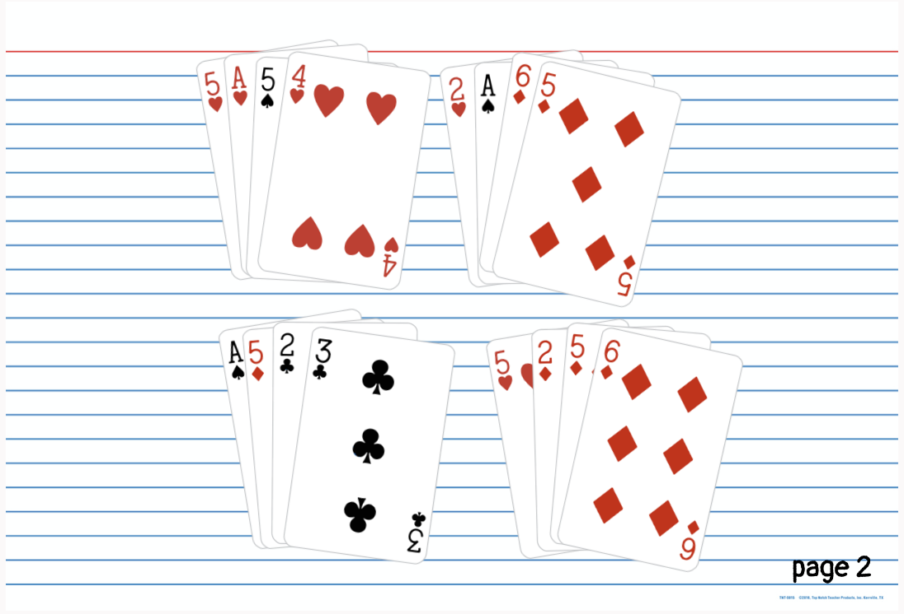

1 | My f1rst card game
There are many cards that are used to tell fortunes — tarot cards, for example. I wonder if we can use poker/playing cards to find answers too.
Players: 4+
Time: 30 min
Materials: a deck of cards per person
How to play: Shuffle the cards and deal them as shown in the image. The rest of this is irrelevant; the image is really all you need (I'm serious).
I don't have any more puzzles. Just let me know when you find the answer*. I'll add more if I think of more. In the meantime, this butterfly keyboard really is bothering me.
This puzzle is heavily inspired by Detective Conan chapters 1055-1057 (highlight to see).